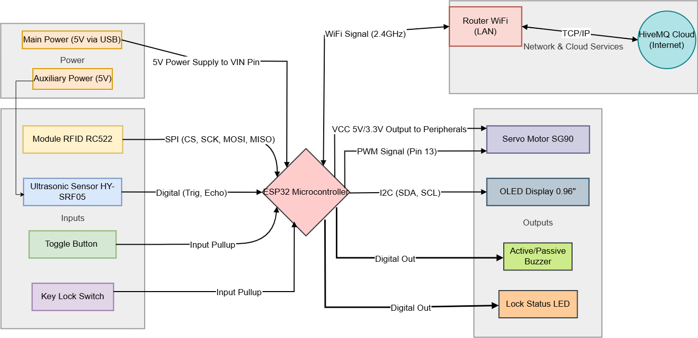
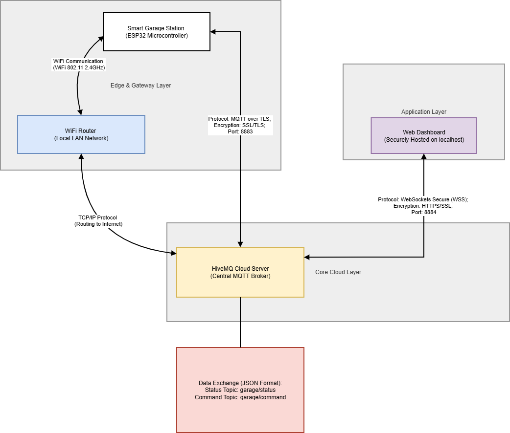
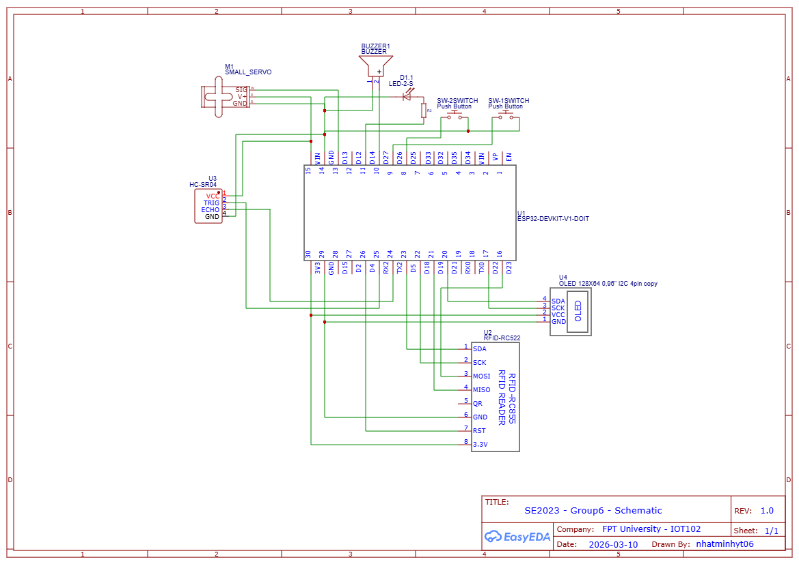
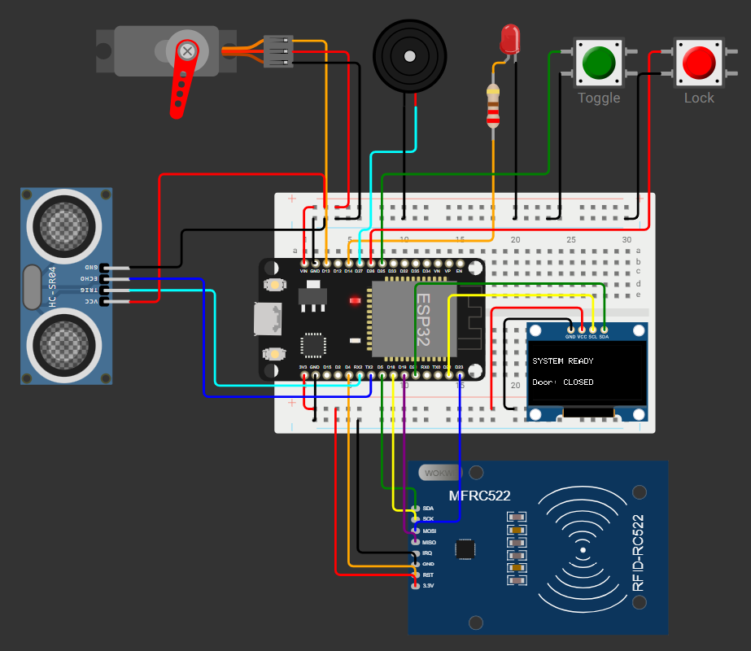
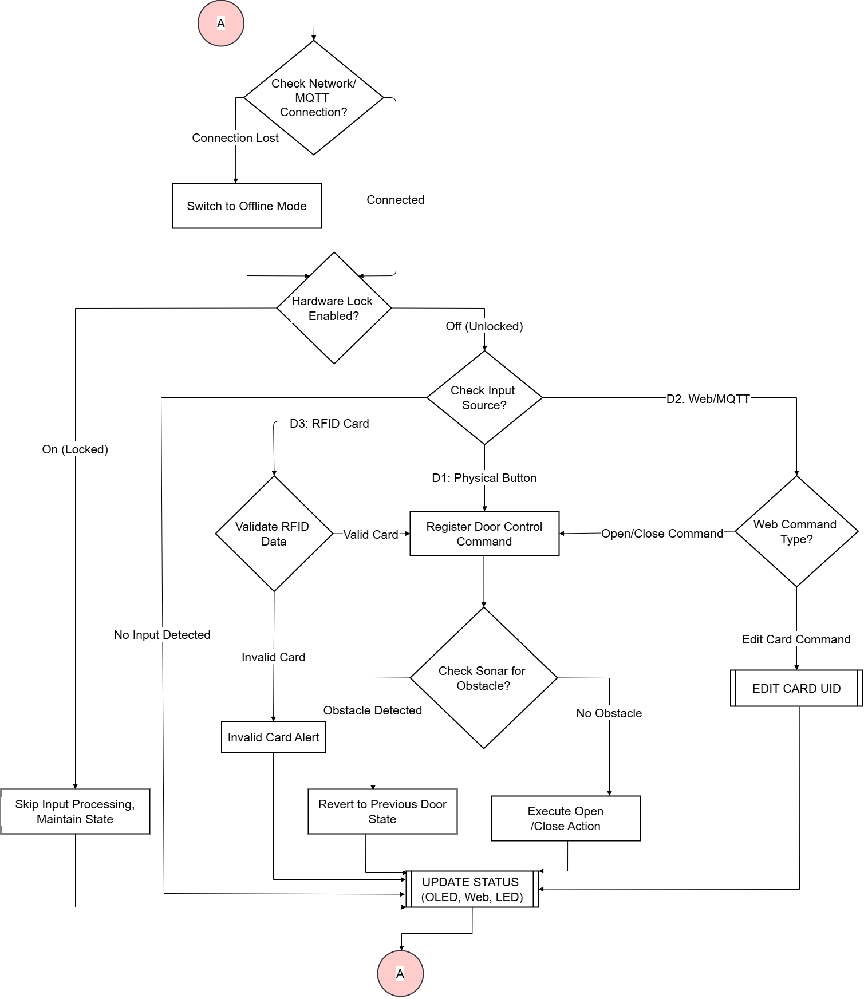
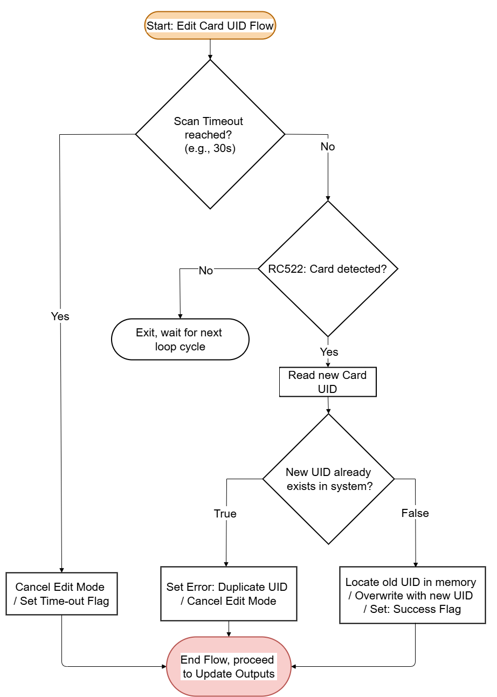
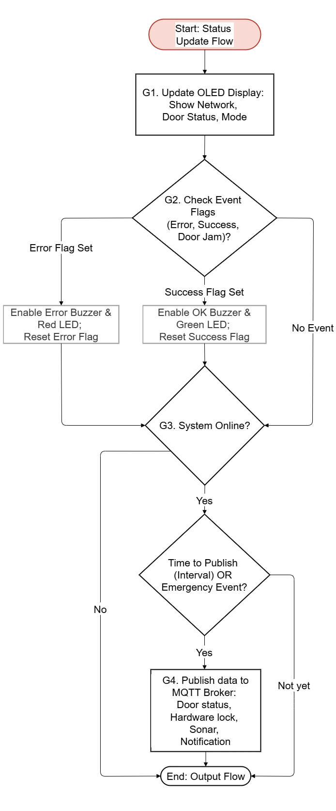
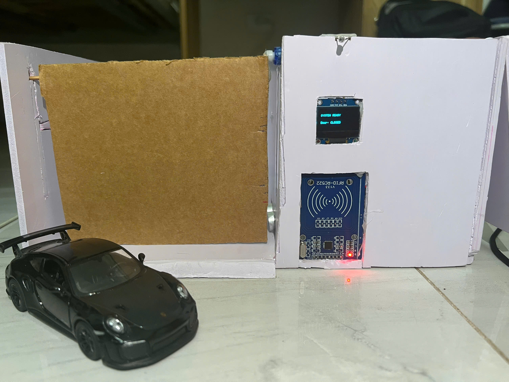
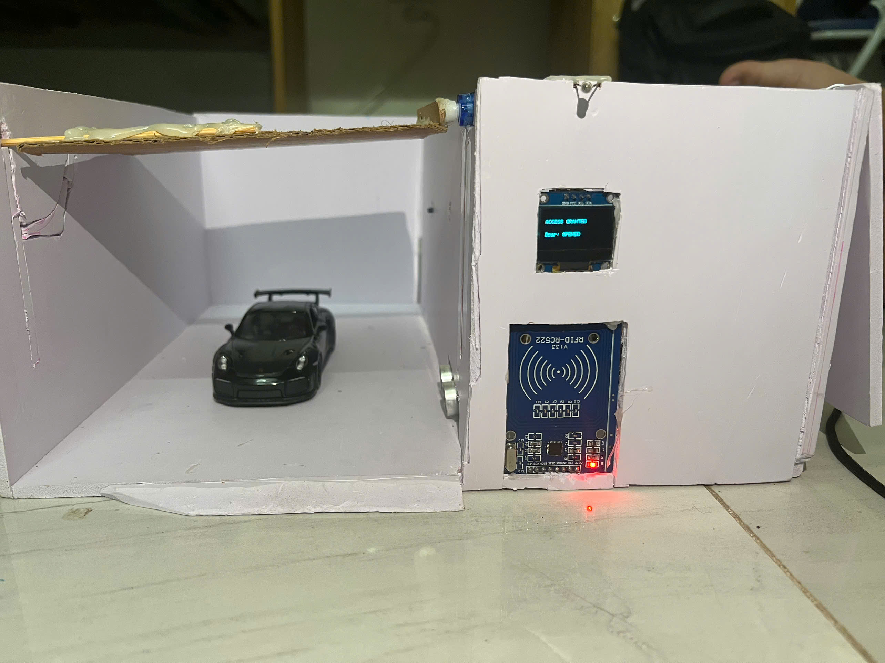
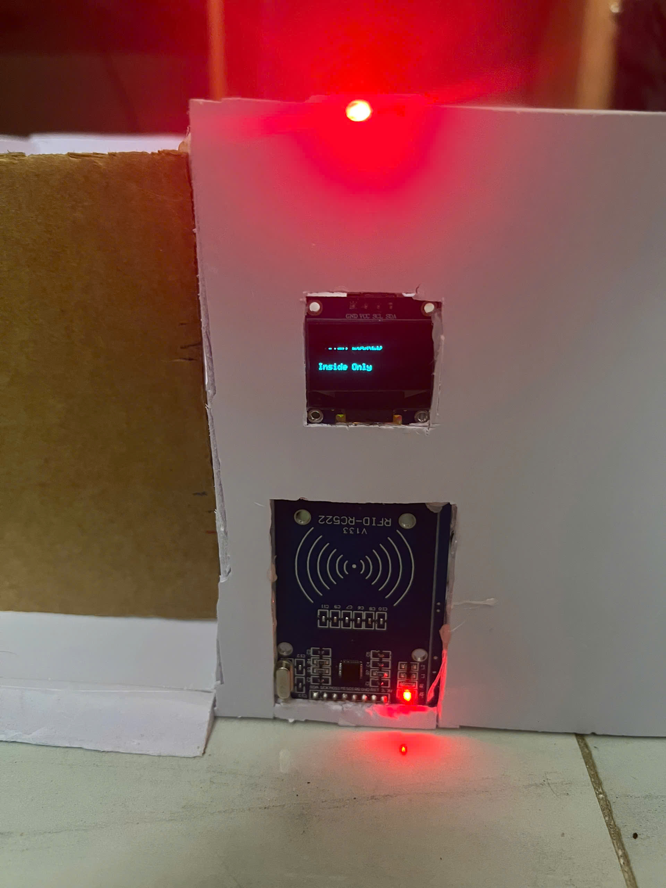

Class: SE2023
Group: 6
| 1. Nguyễn Nhật Minh | HE200247 |
| 2. Nguyễn Đặng Minh Vũ | HE200317 |
| 3. Nguyễn Lê Minh | HE200305 |
Context & Problem: Traditional garage doors lack remote monitoring and automated safety features,
posing risks of door jamming, property damage, and unauthorized access.
Proposed Solution: This project aims to build a comprehensive Smart Garage system. By integrating
physical security (RFID), operational safety (ultrasonic anti-pinching), and a real-time Web
Dashboard (ReactJS & MQTT), the system provides users with seamless, secure, and remote management
of their parking spaces.
General Objective:
To design and implement a stable Smart Garage model featuring real-time data synchronization between
the physical hardware (ESP32) and a digital Web Application via the Internet.
Specific Objectives:
Hardware (IoT): Develop a central control system capable of RFID authentication, providing local
OLED/Buzzer alerts, and utilizing an ultrasonic sensor for automatic anti-pinching (Emergency stop).
Software (Web Dashboard): Build a responsive ReactJS interface for real-time status monitoring,
remote door operation, and high-level security management (Master Lock feature).
The system architecture of the Smart Garage is divided into two main components: the physical hardware layout and the IoT network communication flow, as illustrated below:

Figure 1.1. Hardware block diagram of the Smart Garage system

Figure 1.2. Network architecture and IoT communication flow
The network communication flow is structured into three main layers to ensure secure, real-time data exchange:
garage/status (for hardware updates) and
garage/command (for web-based control).
List of hardware components used in the project:
| No. | Component | Description / Function |
|---|---|---|
| 1 | ESP32 | Central microcontroller — handles logic processing and WiFi/Bluetooth connectivity. |
| 2 | OLED SSD1306 | Status display screen showing gate state (open/closed). |
| 3 | HY-SRF05 | Ultrasonic sensor for detecting obstacles when close/open. |
| 4 | MFRC522 RFID | RFID card reader module for controlling vehicle entry/exit. |
| 5 | Servo Motor | Motor that controls the opening and closing of the gate. |
| 6 | LED | Status indicator light for operational state feedback. |
| 7 | Buzzer | Piezo buzzer for audible alerts on card scan or warning events. |
| 8 | Push Button x2 | Physical push buttons for manual control or system lock. |

Figure 2. Wiring schematic of all components connected to the ESP32
Simulated circuit design or physical breadboard/PCB layout of the system:

Figure 3. Electronic circuit of the Smart Garage system
Algorithm flowchart of the void loop() function handling the system's main logic:

Figure 4.1. Algorithm flow chart of the system

Figure 4.2. UPDATE STATUS flow chart of the system

Figure 4.3. EDIT CARD UID flow chart of the system
Real-world photos of the system in operation, interacting with all peripheral devices.

Figure 5.1. Product demo test run: Door Closed

Figure 5.2. Product demo test run: Door Opening

Figure 5.3. Product demo test run: System Lock
The IoT Smart Garage prototype was successfully assembled and deployed. The ESP32 microcontroller efficiently coordinates the front panel interface (RC522 RFID reader, SSD1306 OLED) and the internal mechanical system (Servo motor, HY-SRF05 ultrasonic sensor). The hardware is compactly wired and securely mounted, ensuring stable physical operation and electrical safety.
The system underwent rigorous testing in both local and cloud-connected modes. Below is the summary of the core test cases:
| No. | Test Case | Action Taken | Actual Result | Evaluation |
|---|---|---|---|---|
| 1 | VALID Card Authentication | Scan an authorized RFID card on the reader. | OLED greets the user; Servo rotates 180° to open the door. | PASSED |
| 2 | INVALID Card Authentication | Scan an unregistered RFID card. | OLED displays "Access Denied"; Buzzer sounds; door remains closed. | PASSED |
| 3 | Open with Toggle Button | Press the manual pushbutton on the device or the Web toggle. | System bypasses RFID authentication and actuates the Servo to reverse the current door state (Open ↔ Close). | PASSED |
| 4 | Anti-pinch Safety Feature | Place an obstacle <10cm from sonar while closing. | Sonar detects obstacle; door stops closing and reverts to Emergency Open state. | PASSED |
| 5 | Obstacle when OPEN | Place an obstacle under the door while it is OPEN, then trigger a CLOSE command. | System blocks the closing sequence. OLED/Buzzer warns of obstruction until the path is cleared. | PASSED |
| 6 | Local "Hard Lock" | Toggle the physical Hard Lock switch/button on the control panel. | System enters lockdown mode. Local RFID and toggle button access are disabled until physically unlocked. | PASSED |
| 7 | Real-time Cloud Sync | Open/close door physically. | System publishes status to HiveMQ; Web Dashboard updates instantly. | PASSED |
| 8 | Edit Master Card via Web | Publish a new RFID UID string to the designated MQTT topic via Web Dashboard. | ESP32 updates the authorized UID in memory. The new card grants access; the old card is rejected. | PASSED |
Evaluation of achieved objectives: The project met 100% of its technical goals. It successfully delivers a robust IoT access control system with reliable mechanical actuation, real-time MQTT cloud synchronization, and strict safety mechanisms (ultrasonic obstacle detection).
Future Development Directions:
Main code snippet handling the system logic:
// Include required libraries
#include <SPI.h>
#include <Wire.h>
#include <Adafruit_GFX.h>
#include <Adafruit_SSD1306.h>
#include <MFRC522.h>
#include <ESP32Servo.h>
#include <WiFi.h>
#include <WiFiClientSecure.h>
#include <PubSubClient.h>
#include <Preferences.h>
// ================= MACROS & PINS =================
#define RST_PIN 4
#define SS_PIN 5
#define SERVO_PIN 13
#define TRIG_PIN 16
#define ECHO_PIN 17
#define BTN_TOGGLE_PIN 25
#define BTN_LOCK_PIN 26
#define LED_LOCK_PIN 14
#define BUZZER_PIN 27
#define SCREEN_WIDTH 128
#define SCREEN_HEIGHT 64
#define ANGLE_CLOSED 110
#define ANGLE_OPENED 20
#define ANGLE_SAFE_ZONE ((ANGLE_CLOSED + ANGLE_OPENED) / 2)
// ================= NETWORK CONFIG =================
const char* ssid = "Mia House 104";
const char* password = "104104104";
const char* mqtt_server = "20d885075a5b4350a1d5ba23a4310990.s1.eu.hivemq.cloud";
const int mqtt_port = 8883;
const char* mqtt_user = "garage_user";
const char* mqtt_pass = "Garage123@";
const char* mqtt_topic_status = "garage/status";
const char* mqtt_topic_cmd = "garage/command";
// ================= GLOBAL OBJECTS =================
MFRC522 rfid(SS_PIN, RST_PIN);
Adafruit_SSD1306 oled(SCREEN_WIDTH, SCREEN_HEIGHT, &Wire, -1);
Servo doorServo;
WiFiClientSecure espClient;
PubSubClient client(espClient);
Preferences preferences;
// ================= STATES =================
enum DoorState {
DOOR_CLOSED,
DOOR_OPENING,
DOOR_OPENED,
DOOR_CLOSING,
DOOR_STOPPED,
DOOR_EMERGENCY
};
DoorState currentDoorState = DOOR_CLOSED;
bool isHardLocked = false;
bool isPendingLock = false;
bool isLearningCard = false;
unsigned long learnModeStartTime = 0;
// Variables for Inputs & Sensors
bool lastLockSwitchState = false;
bool lastToggleState = HIGH;
int currentAngle = ANGLE_CLOSED;
float currentDistance = 999.0;
String masterUID = "B2:19:F5:06";
// Timers
unsigned long lastToggleTime = 0;
unsigned long lastLockTime = 0;
unsigned long lastRfidTime = 0;
unsigned long lastSonarTime = 0;
unsigned long lastServoTime = 0;
unsigned long lastPublishTime = 0;
unsigned long lastReconnectAttempt = 0;
// ================= PROTOTYPES =================
void updateOLED(String line1, String line2);
void beep(int duration);
void requestOpenDoor(String source);
void requestCloseDoor(String source);
void requestToggleDoor(String source);
void requestLock();
void requestUnlock();
void publishStatusToWeb(bool force = false);
void setup_wifi();
void mqttCallback(char* topic, byte* payload, unsigned int length);
// ================= SETUP =================
void setup() {
Serial.begin(9600);
SPI.begin();
rfid.PCD_Init();
preferences.begin("garage", false);
String savedUID = preferences.getString("masterUID", "");
if (savedUID != "") {
masterUID = savedUID;
}
if (!oled.begin(SSD1306_SWITCHCAPVCC, 0x3C)) {
Serial.println("OLED ERROR");
while (true);
}
pinMode(BTN_TOGGLE_PIN, INPUT_PULLUP);
pinMode(BTN_LOCK_PIN, INPUT_PULLUP);
pinMode(LED_LOCK_PIN, OUTPUT);
pinMode(BUZZER_PIN, OUTPUT);
pinMode(TRIG_PIN, OUTPUT);
pinMode(ECHO_PIN, INPUT);
doorServo.attach(SERVO_PIN);
doorServo.write(currentAngle);
updateOLED("SYSTEM READY", "Door: CLOSED");
Serial.println("SMART GARAGE READY");
setup_wifi();
espClient.setInsecure();
client.setServer(mqtt_server, mqtt_port);
client.setCallback(mqttCallback);
}
// ================= LOOP =================
void loop() {
unsigned long now = millis();
if (isLearningCard && (now - learnModeStartTime > 15000)) {
isLearningCard = false;
Serial.println("LEARN MODE TIMEOUT: Hết 15s chờ thẻ. Tự động hủy!");
updateOLED("LEARN TIMEOUT", doorStateToString(currentDoorState));
beep(200); delay(100); beep(200);
}
// 1. NETWORK & MQTT
handleNetwork(now);
// 2. SAVE PREVIOUS STATE FOR SYNC
DoorState oldDoorState = currentDoorState;
bool oldLockState = isHardLocked;
// 3. READ SENSORS
readSonar(now);
safetyCheck();
// 4. READ PHYSICAL INPUTS
readLockSwitch(now);
if (!isHardLocked && !isPendingLock) {
readToggleButton(now);
readRFID(now);
}
// 5. UPDATE ACTUATORS
runServo(now);
// 6. SYNC TO WEB
if (client.connected()) {
if (currentDoorState != oldDoorState || isHardLocked != oldLockState) {
publishStatusToAll(true);
Serial.println("[ĐỒNG BỘ WEB] Phát hiện thay đổi vật lý -> Báo cáo tức thời!");
} else {
publishStatusToAll(false);
}
}
}
// ================= DOOR CONTROL ACTIONS =================
void requestOpenDoor(String source) {
if (currentDoorState == DOOR_CLOSED) {
currentDoorState = DOOR_OPENING;
updateOLED("OPENING DOOR", source);
Serial.println("OPENING DOOR by: " + source);
}
}
void requestCloseDoor(String source) {
if (currentDoorState == DOOR_OPENED || currentDoorState == DOOR_EMERGENCY) {
currentDoorState = DOOR_CLOSING;
updateOLED("CLOSING DOOR", source);
Serial.println("CLOSING DOOR by: " + source);
}
}
void requestToggleDoor(String source) {
if (currentDoorState == DOOR_CLOSED) {
requestOpenDoor(source);
} else if (currentDoorState == DOOR_OPENED || currentDoorState == DOOR_EMERGENCY) {
requestCloseDoor(source);
} else if (currentDoorState == DOOR_STOPPED) {
if (currentDistance >= 10.0) {
currentDoorState = DOOR_OPENING;
updateOLED("RESUMING...", source);
Serial.println("RESUME OPENING by: " + source);
} else {
Serial.println("CANNOT RESUME: Obstacle still present!");
}
}
}
void requestLock() {
beep(80);
if (currentDoorState == DOOR_CLOSED) {
isHardLocked = true;
digitalWrite(LED_LOCK_PIN, HIGH);
Serial.println("SYSTEM LOCKED");
updateOLED("SYSTEM LOCKED", "Inside Only");
} else {
isPendingLock = true;
Serial.println("LOCK PENDING... CLOSING DOOR");
updateOLED("LOCK PENDING", "Closing...");
currentDoorState = DOOR_CLOSING;
}
}
void requestUnlock() {
isHardLocked = false;
isPendingLock = false;
digitalWrite(LED_LOCK_PIN, LOW);
beep(80);
Serial.println("SYSTEM UNLOCKED");
updateOLED("SYSTEM READY", doorStateToString(currentDoorState));
}
// ================= INPUT READING =================
void readToggleButton(unsigned long now) {
bool currentToggleState = digitalRead(BTN_TOGGLE_PIN);
if (currentToggleState == LOW && lastToggleState == HIGH && (now - lastToggleTime > 50)) {
lastToggleTime = now;
if (isLearningCard) {
isLearningCard = false;
updateOLED("LEARN CANCELLED", doorStateToString(currentDoorState));
beep(200);
} else {
requestToggleDoor("BUTTON");
}
}
lastToggleState = currentToggleState;
}
void readLockSwitch(unsigned long now) {
bool currentState = digitalRead(BTN_LOCK_PIN) == LOW;
if (currentState != lastLockSwitchState && (now - lastLockTime > 50)) {
lastLockSwitchState = currentState;
if (currentState) {
lastLockTime = now;
if (isLearningCard) {
isLearningCard = false;
Serial.println("LEARN MODE CANCELLED");
updateOLED("LEARN CANCELLED", doorStateToString(currentDoorState));
beep(200);
} else {
if (isHardLocked || isPendingLock) requestUnlock();
else requestLock();
}
}
}
}
void readRFID(unsigned long now) {
if (rfid.PICC_IsNewCardPresent() && rfid.PICC_ReadCardSerial()) {
if (now - lastRfidTime > 3000) {
lastRfidTime = now;
String scannedUID = "";
for (byte i = 0; i < rfid.uid.size; i++) {
scannedUID += (rfid.uid.uidByte[i] < 0x10 ? "0" : "");
scannedUID += String(rfid.uid.uidByte[i], HEX);
if (i != rfid.uid.size - 1) scannedUID += ":";
}
scannedUID.toUpperCase();
Serial.println("-------------------------");
Serial.print("MÃ THẺ: "); Serial.println(scannedUID);
if (isLearningCard) {
masterUID = scannedUID;
preferences.putString("masterUID", masterUID);
isLearningCard = false;
Serial.println("-> LƯU THÀNH CÔNG THẺ CHÍNH MỚI: " + masterUID);
beep(100); delay(100); beep(100); delay(100); beep(300);
updateOLED("CARD SAVED!", "System Ready");
delay(2000);
updateOLED("SYSTEM READY", doorStateToString(currentDoorState));
} else {
if (scannedUID == masterUID) {
Serial.println("-> HỢP LỆ! Mở/Đóng cửa.");
beep(80);
requestToggleDoor("RFID");
} else {
Serial.println("-> SAI MÃ THẺ! Cảnh báo đột nhập.");
beep(500);
updateOLED("ACCESS DENIED", "Invalid Card!");
}
}
Serial.println("-------------------------");
}
rfid.PICC_HaltA();
}
}
// ================= SENSORS & ACTUATORS =================
void readSonar(unsigned long now) {
if (now - lastSonarTime < 60) return;
lastSonarTime = now;
digitalWrite(TRIG_PIN, LOW);
delayMicroseconds(2);
digitalWrite(TRIG_PIN, HIGH);
delayMicroseconds(10);
digitalWrite(TRIG_PIN, LOW);
long duration = pulseIn(ECHO_PIN, HIGH, 3000);
currentDistance = (duration == 0) ? 999.0 : (duration / 2.0) * 0.0343;
}
void safetyCheck() {
// 1. CLOSING
if (currentDoorState == DOOR_CLOSING && currentDistance < 10.0) {
currentDoorState = DOOR_EMERGENCY;
if (isPendingLock) {
isPendingLock = false;
Serial.println("LOCK CANCELLED DUE TO OBSTACLE");
}
beep(300);
Serial.println("OBSTACLE DETECTED - EMERGENCY OPEN");
updateOLED("OBSTACLE!", "EMERGENCY OPEN");
}
// 2. OPENING
if (currentDoorState == DOOR_OPENING
&& currentAngle > ANGLE_SAFE_ZONE
&& currentDistance < 10.0) {
currentDoorState = DOOR_STOPPED;
beep(300);
Serial.println("OBSTACLE DETECTED - DOOR STOPPED (not past safe zone)");
updateOLED("OBSTACLE!", "Door STOPPED");
}
}
//==== SERVO =========
void runServo(unsigned long now) {
// 1. THIẾT LẬP TỐC ĐỘ
unsigned long currentDelay = 15;
if (currentDoorState == DOOR_OPENING) {
currentDelay = 30;
} else if (currentDoorState == DOOR_EMERGENCY) {
currentDelay = 5;
}
if (now - lastServoTime < currentDelay) return;
lastServoTime = now;
switch (currentDoorState) {
case DOOR_OPENING:
currentAngle -= 1;
if (currentAngle == ANGLE_OPENED) {
currentAngle = ANGLE_OPENED;
currentDoorState = DOOR_OPENED;
if (!isHardLocked)
updateOLED("ACCESS GRANTED", "Door: OPENED");
}
doorServo.write(currentAngle);
break;
case DOOR_CLOSING:
currentAngle += 1;
if (currentAngle == ANGLE_CLOSED) {
currentAngle = ANGLE_CLOSED;
currentDoorState = DOOR_CLOSED;
if (isPendingLock) {
isPendingLock = false;
isHardLocked = true;
digitalWrite(LED_LOCK_PIN, HIGH);
Serial.println("SYSTEM LOCKED");
updateOLED("SYSTEM LOCKED", "Inside Only");
} else if (!isHardLocked) {
updateOLED("SYSTEM READY", "Door: CLOSED");
}
}
doorServo.write(currentAngle);
break;
case DOOR_EMERGENCY:
currentAngle -= 3;
if (currentAngle <= ANGLE_OPENED) {
currentAngle = ANGLE_OPENED;
currentDoorState = DOOR_OPENED;
}
doorServo.write(currentAngle);
break;
case DOOR_STOPPED:
doorServo.write(currentAngle);
break;
default:
break;
}
}
// ================= HARDWARE PERIPHERALS =================
void updateOLED(String line1, String line2) {
oled.clearDisplay();
oled.setTextSize(1);
oled.setTextColor(SSD1306_WHITE);
oled.setCursor(0, 15);
oled.println(line1);
oled.setCursor(0, 40);
oled.println(line2);
oled.display();
}
void beep(int duration) {
digitalWrite(BUZZER_PIN, HIGH);
delay(duration);
digitalWrite(BUZZER_PIN, LOW);
}
// ================= UTILITIES =================
String doorStateToString(DoorState state) {
switch (state) {
case DOOR_CLOSED: return "Door: CLOSED";
case DOOR_OPENED: return "Door: OPENED";
case DOOR_STOPPED: return "Door: STOPPED";
case DOOR_EMERGENCY: return "EMERGENCY!";
default: return "Moving...";
}
}
String getWebDoorState(DoorState state) {
switch (state) {
case DOOR_CLOSED: return "DOOR_CLOSED";
case DOOR_OPENING: return "DOOR_OPENING";
case DOOR_OPENED: return "DOOR_OPENED";
case DOOR_CLOSING: return "DOOR_CLOSING";
case DOOR_STOPPED: return "DOOR_STOPPED";
case DOOR_EMERGENCY: return "DOOR_EMERGENCY";
default: return "DOOR_CLOSED";
}
}
// ================= NETWORK & MQTT =================
void handleNetwork(unsigned long now) {
if (WiFi.status() != WL_CONNECTED) {
if (isHardLocked) {
if (now - lastReconnectAttempt > 10000) {
Serial.println("[WIFI] Reconnecting in background...");
WiFi.disconnect();
WiFi.reconnect();
lastReconnectAttempt = now;
}
}
return;
}
if (!client.connected()) {
if (now - lastReconnectAttempt > 5000) {
lastReconnectAttempt = now;
reconnectMQTT();
}
} else {
client.loop();
}
}
void setup_wifi() {
delay(10);
Serial.println();
Serial.print("Connecting WiFi: ");
Serial.println(ssid);
WiFi.begin(ssid, password);
int attempts = 0;
while (WiFi.status() != WL_CONNECTED && attempts < 20) {
delay(500);
Serial.print(".");
attempts++;
}
if (WiFi.status() == WL_CONNECTED) {
Serial.println("\nWiFi Connected! IP: ");
Serial.println(WiFi.localIP());
} else {
Serial.println("\n[WARNING] WiFi failed! Offline mode.");
}
}
bool reconnectMQTT() {
Serial.print("Connecting MQTT... ");
String clientId = "ESP32Garage-Minh-";
clientId += String(random(0xffff), HEX);
if (client.connect(clientId.c_str(), mqtt_user, mqtt_pass)) {
Serial.println(" SUCCESS!");
client.subscribe(mqtt_topic_cmd);
return true;
} else {
Serial.print(" FAILED, rc=");
Serial.println(client.state());
return false;
}
}
void mqttCallback(char* topic, byte* payload, unsigned int length) {
String message;
for (int i = 0; i < length; i++) message += (char)payload[i];
Serial.print("Web Command ["); Serial.print(topic); Serial.print("]: "); Serial.println(message);
if (String(topic) == mqtt_topic_cmd && !isHardLocked && !isPendingLock) {
if (message == "OPEN") requestOpenDoor("Web Command");
else if (message == "CLOSE") requestCloseDoor("Web Command");
else if (message == "TOGGLE") requestToggleDoor("Web Command");
else if (message.startsWith("LEARN_CARD:")) {
String password = message.substring(11);
if (password == "123456") {
isLearningCard = true;
learnModeStartTime = millis();
beep(500);
updateOLED("LEARN MODE", "Scan new card");
Serial.println("LEARN MODE (Web): Xác thực hệ thống hợp lệ!");
} else {
beep(200); delay(100); beep(200);
updateOLED("AUTH FAILED", "Wrong Password");
Serial.println("AUTH FAILED (Web): Lệnh chặn vì Sai mật khẩu!");
}
}
}
}
void publishStatusToWeb(bool force) {
unsigned long now = millis();
if (force || now - lastPublishTime > 500) {
lastPublishTime = now;
String payload = "{";
payload += "\"door\":\"" + getWebDoorState(currentDoorState) + "\",";
payload += "\"lock\":\"" + String(isHardLocked ? "LOCKED" : "UNLOCKED") + "\"";
payload += "}";
client.publish(mqtt_topic_status, payload.c_str());
}
}
void publishStatusToAll(bool force) {
publishStatusToWeb(force);
}